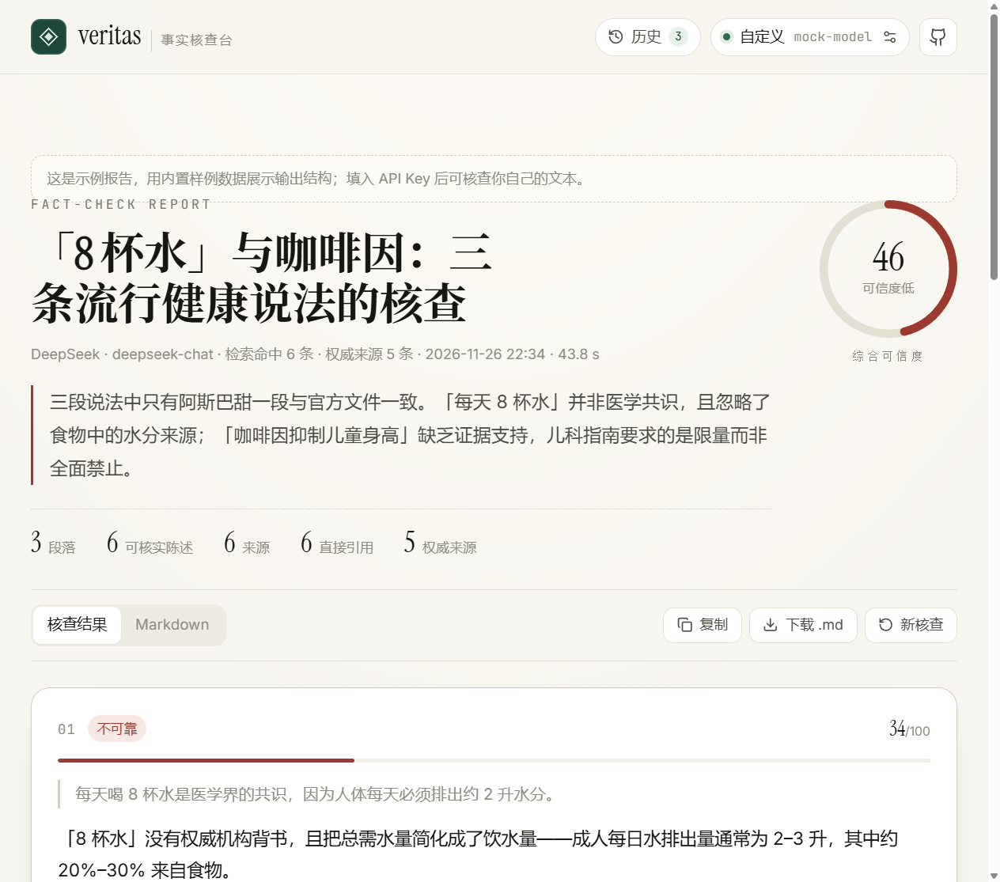
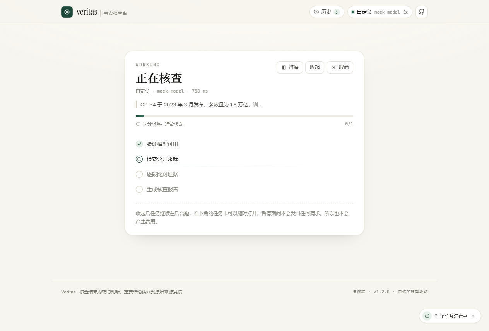
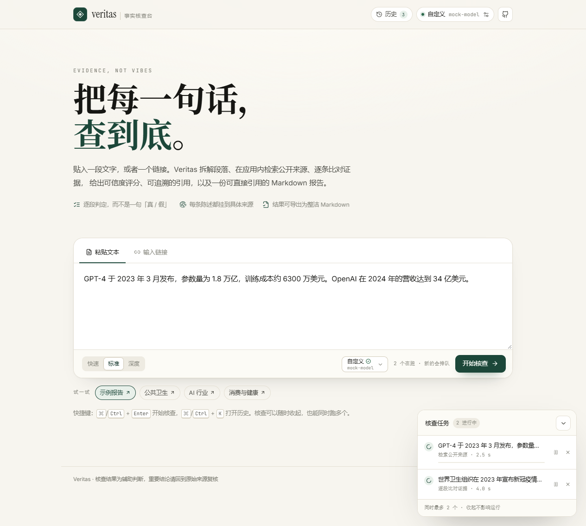
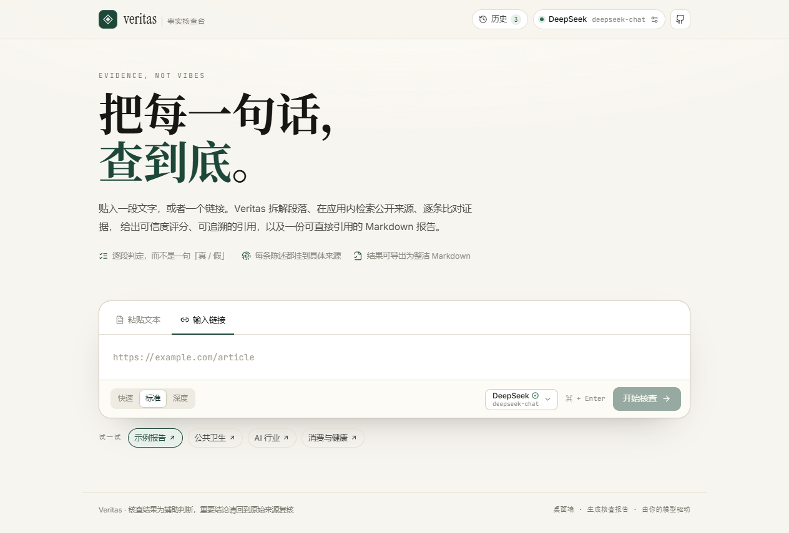
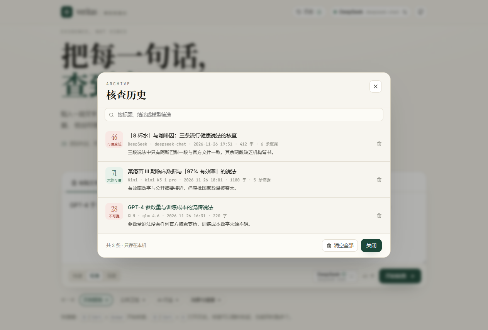
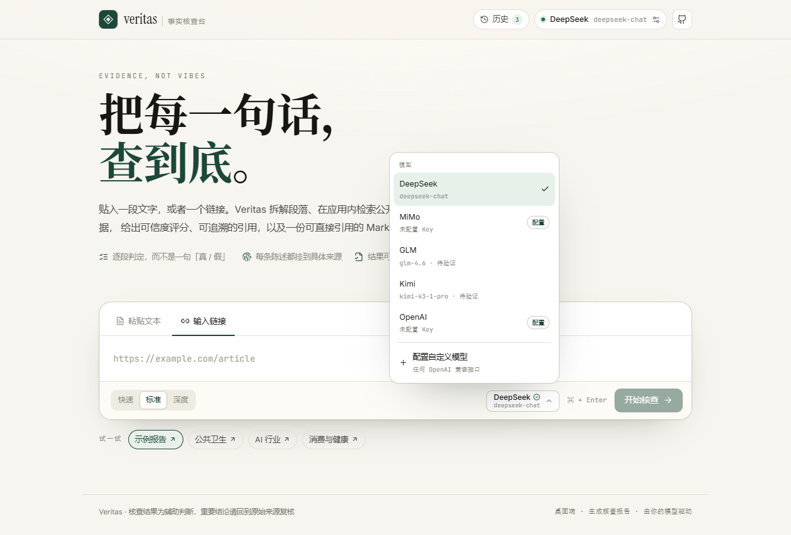

把每一句话，
查到底。
贴入一段文字，或者一个链接。Veritas 会把它拆成段落，逐条检索公开来源，给出可信度百分比、逐段的事实分析和可点击的原始出处，最后汇成一份排版整洁的 Markdown 报告。
不做在线核查，没有服务器 Key 只存在本机 MIT 开源

不做一句话判决
真实文本是混合的：有的数字对，有的因果被夸大
所以 Veritas 不回答「这是不是假新闻」，而是回答「哪一句站得住、哪一句站不住、依据是什么」。每一步都留下可复核的痕迹。
拆段
按自然段切分，逐段判断是否含可核实的事实性主张。纯观点、修辞与主观感受会被标为「无事实主张」跳过。
取证
应用自己搜公开来源（360 / DuckDuckGo / 维基），多条查询并发、两个引擎抢答，只把命中的句子摘成证据，不让模型花额度去联网。
比对
把每条主张与证据并排放，逐条标注支持程度与相关度；找不到来源就写「无法核实」，而不是编一个链接。
成文
输出可信度评分、逐段分析、编号来源清单与核查局限，一键复制或下载为 .md，可直接贴进文档或 PR。
可以暂停
- 按下暂停后不再发出任何新请求，也就不会继续花钱
- 正在飞的那个请求会跑完，界面区分「正在暂停」与「已暂停」
- 继续时从停下的一步接着走，已完成的阶段不重跑
可以收起
- 核查界面整块收起，任务转到底部任务卡继续跑
- 点任务卡任意一条，回到那份进度或报告
- 同时最多跑 2 个，其余排队，前一个结束自动出队
可以更快
- 查询分批并发、双引擎抢答，命中够了就停
- 正文双通道抢跑（7 秒截止），摘要够用就不下载整页
- 同内容重跑时检索约 6ms：搜索与正文都有内存缓存


报告里有什么
- 综合可信度 0–100，环形评分 + 五档判定，段落级进度条
- 逐段卡片：原文引用、判定理由、每条主张的支持程度与相关度
- 来源清单：标题 + 发布机构 + 编号，与正文引用一一对应
- 核查局限：明确写出本次核查没做到的事
- 历史存档：自动存本机，可按标题 / 结论 / 模型筛选，点开回到原报告，也能原样重跑
来源是怎么兜住的
- 正文里的编号只来自服务商真实返回的检索结果，或模型明确给出的 URL
- 同一地址自动去重，冲突编号在归一化阶段被改写
- 段落引用了不存在的来源时，该引用会被移除而非保留
- 抓链接时优先 Jina Reader，失败再走公共代理 + 正文抽取


三种运行形态
同一份前端代码三套网络通道
浏览器受同源策略约束，直连 OpenAI 这类接口会被拦在响应体之外。所以联网能力放在客户端：模型请求与检索请求都由主进程或原生层发出，不受 CORS 影响。
| 形态 | 产物 | 网络通道 | 直连 OpenAI |
|---|---|---|---|
| Windows 桌面 | NSIS 安装版 / 免安装单文件 | 页面 fetch → IPC → 主进程请求 |
可以 |
| Android | 签名 APK，190 KB | WebView → @JavascriptInterface 桥 |
可以 |
| 静态网页 | dist/ 或 Docker 镜像 |
浏览器 fetch |
不行，需自建转发 |
桌面端为什么不用 file://
file://的 origin 是null，localStorage会被隔离，Key 缓存直接失效- 改为注册自定义
app://协议托管构建产物，页面拿到稳定 origin - 关闭 Node 集成，
contextIsolation: true，页面只能通过 preload 暴露的方法通信
安卓端为什么不用 Capacitor
- Gradle 与远程依赖在这台机器上只有约 150 KB/s，构建一次要几十分钟
- 于是手写了一条
aapt2 → javac → d8 → zipalign → apksigner的构建链 - 壳子只做三件事：本地静态服务、WebView 加载、把请求转给
HttpURLConnection
三份产物都在 GitHub Releases 上，附 SHA-256。Windows 包没有代码签名，首次运行会被 SmartScreen 拦一次，属正常现象。
自托管镜像 · 给内网或 NAS 用
# 拉起一个只读的静态站，监听 8080
docker run -d --name veritas -p 8080:80 ghcr.io/kkai726/veritas:latest
模型与 Key
自带 Key，按服务商分别缓存换模型不用重填
内置六项，模型名可改成该服务商支持的任意 ID；其他服务商走「自定义」填地址。Key 写入本机
localStorage，随请求直接发往你选择的服务商。
| 服务商 | 默认模型 | 检索方式 | 备注 |
|---|---|---|---|
| DeepSeek | deepseek-chat |
应用内检索 | 中文稳、价格低，日常核查够用 |
| MiMo | mimo-v2.6-pro |
应用内检索 | 小米开放平台，OpenAI 兼容 |
| GLM | glm-4.6 |
应用内检索 | 智谱开放平台，/api/paas/v4 |
| Kimi | kimi-k3-1-pro |
应用内检索 | 长文本见长，适合整篇核查 |
| OpenAI | gpt-4.1 |
应用内 · 兜底 web_search |
本地检索空手时才用官方检索 |
| 自定义 | 自填 | 取决于网关 | 中转站、vLLM、Ollama、Gemini / Perplexity / OpenRouter |

关于「在线版」
这个站点只做介绍，不跑核查
曾经有过一个网页版，后来下线了，原因很具体：浏览器的跨域策略会让 OpenAI 这类接口的响应体读不到，页面只能拿到一句
Failed to fetch；就算换成能直连的服务商，把 Key 填在别人部署的网页里也不合适。所以现在只提供客户端——
Key 存在你的机器上，检索与模型请求都从你的机器发出。
它不做的事
- 不托管任何服务端、数据库或代理
- 不做埋点统计，不收集报告内容
- 不替你判断「该不该信」，只给证据与支持程度
它做不到的事
- 会因反爬或登录墙抓不到部分链接的正文
- 模型仍可能给出看似合理但错误的判断
- 未联网的模型有知识截止日期，近期事件容易判错
- 搜索结果页是抓取来的，连续核查可能被限流，此时会换源或降级
报告是辅助材料，不是判决书。重要结论请回到编号指向的原文复核。